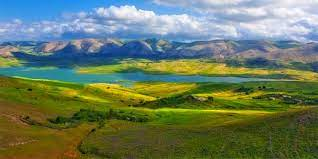
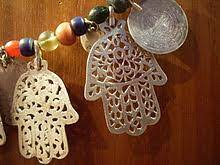
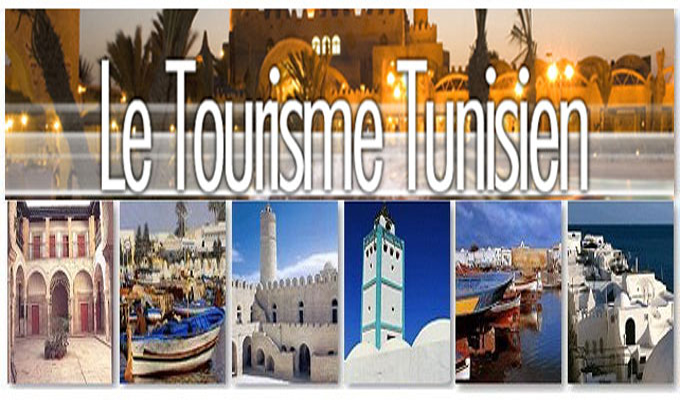

Tourisme en Tunisie
Économie
Le tourisme joue un rôle crucial dans l'économie tunisienne, contribuant significativement aux recettes nationales et à la création d'emplois.
Durabilité
La Tunisie s'engage à promouvoir un tourisme durable, préservant ses ressources naturelles et culturelles pour les générations futures.
Culture
La richesse culturelle de la Tunisie attire les visiteurs du monde entier, avec ses sites archéologiques, ses festivals, sa cuisine et son artisanat.
Médical
Le tourisme médical en Tunisie est en plein essor, offrant des soins de qualité à des coûts abordables dans des établissements modernes.
Les villess
Les villes comme Tunis, Sousse, Hammamet, Djerba et Tozeur offrent une expérience touristique variée, alliant histoire, plages, désert et traditions.
